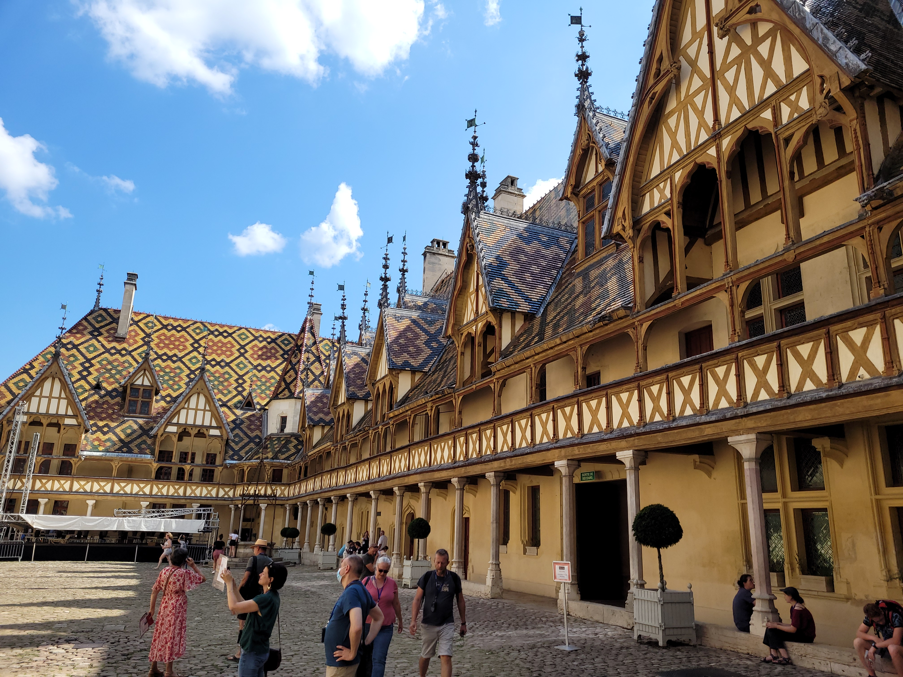

<!--Main layout-->
<main class="vennbahngrijs">
  <div class="container">

      <div class="row">
          <div class="col-md-12 pt-5">
              <h2>Gray - Beaune</h2>
              <h5>Etappe 6 - 100 KM</h5>
          </div>
      </div>

      <div class="row">
          <div class="col-md-6">
              <div class="row">
                  <div class="col-md-12 pt-5">
                    <h4>De route</h4>
                      Deze route is van Gray naar Beaune en begint met 50 kilometer fietsen langs de Saône.
                      Na 50 kilometer langs de rivier fietsen, ga je door mooie zonnebloem- en graanvelden.
                      In de laatste 30 kilometer ga je nog door 3 stukjes bos. <br><br>

                      De laatste 50 kilometer is niet speciaal en helaas moet je over de gewone weg.<br><br>

                      In het plaatsje Beaune hebben we onze enige rustdag gehad.<br>
                      Het plaatsje Beaune is toeristich maar zeker de moeite waard.<br>
                      Wanneer je een rustdag plant, bezoek hier in ieder geval het beroemde oude
                      <a href="https://www.beaune-bourgondie.nl/ontdekken/het-hospices-de-beaune"  target="_blank" >Ziekenhuis

                      </a><br><br>

                      Je kunt Beaune ook overslaan en via de fietsroute langs de Saône naar Chalon-sur-Saône gaan.
                  </div>
              </div>
          </div>
          <div class="col-md-6 pt-5">
                  
          </div>
      </div>

      <div class="row">
          <div class="col-md-12 pt-5">
             <h4>Waar moet je op letten</h4>
             Een groot stuk van deze rout gaat dus over autowegen. Voorzichtig zijn. 
          </div>

      </div>


      <iframe src="https://www.google.com/maps/embed?pb=!1m34!1m12!1m3!1d88737.8922542801!2d5.036420444171569!3d47.088443664339465!2m3!1f0!2f0!3f0!3m2!1i1024!2i768!4f13.1!4m19!3e1!4m3!3m2!1d47.448667199999996!2d5.591017!4m3!3m2!1d47.4040725!2d5.5075895!4m3!3m2!1d47.1950545!2d5.381590999999999!4m5!1s0x47f2f344cd583ffb%3A0xba8cf496643eff53!2sBeaune%2C%20Frankrijk!3m2!1d47.02603!2d4.8400039999999995!5e1!3m2!1snl!2snl!4v1662471219206!5m2!1snl!2snl"
      class="mt-5 mb-5" width="100%" height="600px" allowfullscreen="" loading="lazy" referrerpolicy="no-referrer-when-downgrade">
     </iframe>

  </div>
</main>
